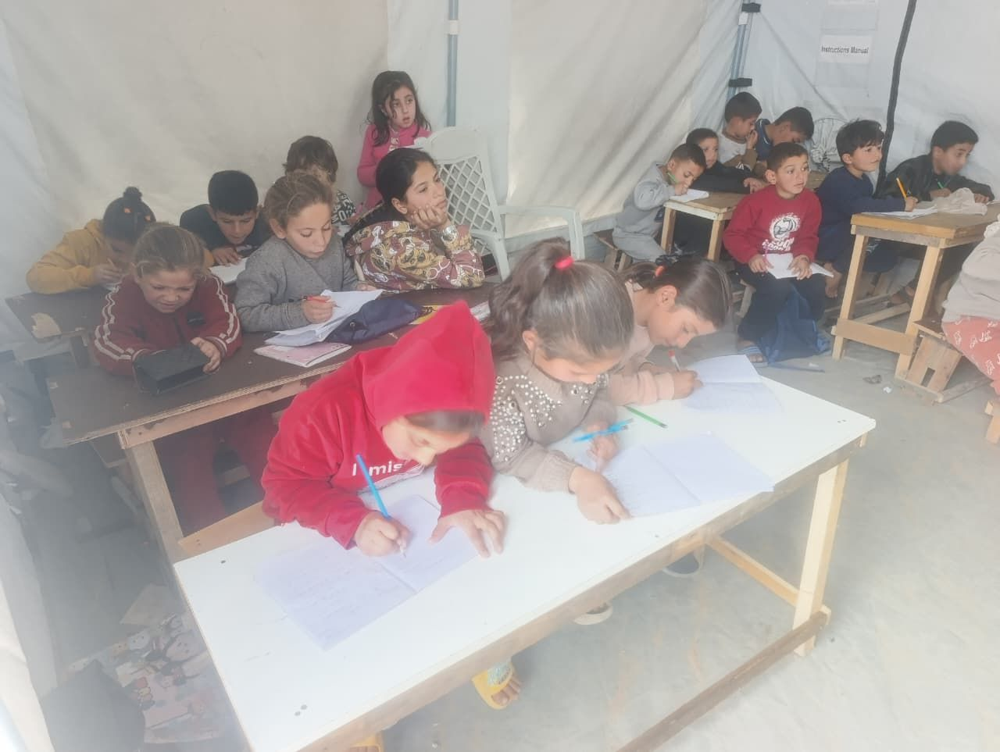

Together we are strong.
Dar Al-Rahma accompanies and supports existing relief projects on the ground and connects them with one another – for people and animals in need.
Support projects Projects in the networkOur work at a glance
Animal welfare in the middle of North Gaza as our own project – plus projects on the ground that we accompany, support and connect with one another. Just tap a tile.
 Our own project
Our own projectDar Al-Rahma Cat Rescue
Rescue, care and veterinary treatment for cats pulled from the rubble.
→ Get involved
Get involvedCat sponsorships
One cat. One month. Your sponsorship.
→ Wish calendar
Wish calendarPaws of Hope
Every wish stitches a piece of the picture.
→ The situation
The situationBombs aren't the only thing that costs lives
Epidemics, sewage, missing medicines.
→ In the network
In the networkProjects we accompany
Medical Point, Kids4Hope, Hope4Humanity – on one page.
→ The situation
The situationFacts & figures
Gaza in sober numbers – with sources.
→ Why there
Why thereWhy North Gaza
That is where the least aid arrives.
→
About usWe are the network
Accompany, support, connect.
→ Frankfurt · 2027Charity Gala
Culture, encounters and help in a single evening.
→ Get involvedHow you can help
Donate, take part, share contacts – every bit of help counts.
→Every life is a star.
For every child, every person and every animal in Gaza who is helped. Tap the sky and light a star of hope.
0 stars of hope you have lit.
Together we are strong
“Dar Al-Rahma” means “House of Compassion”. We don't start projects from above – we strengthen those that people on the ground have long carried.
What the network doesVisibility, ways to donate, connection
- Every project stays independent – with its own name, logo and its own leadership on the ground.
- We provide visibility, ways to donate and connection between the projects.
- That way the projects share knowledge, contacts and support instead of each fighting alone.
How we workOn the ground · transparent · independent
With the people on the ground: Every project has its own leadership in Gaza. We listen and decide together what is needed most urgently.
Transparent: Two-person rule, receipts and reports. Learn more
Independent: Humanity, impartiality, neutrality – help is based on need alone.
Why we do thisCompassion knows no border
Compassion should not stop at a border – not between countries, not between humans and animals. For us, help is a cycle between home and abroad, humans and animals, giving and receiving. Our mission statement
Non-profit UG in formationSo that help stays reliable
So far, private individuals carry the projects. To make the help lasting and traceable, we are preparing to found a non-profit UG. Status of the founding